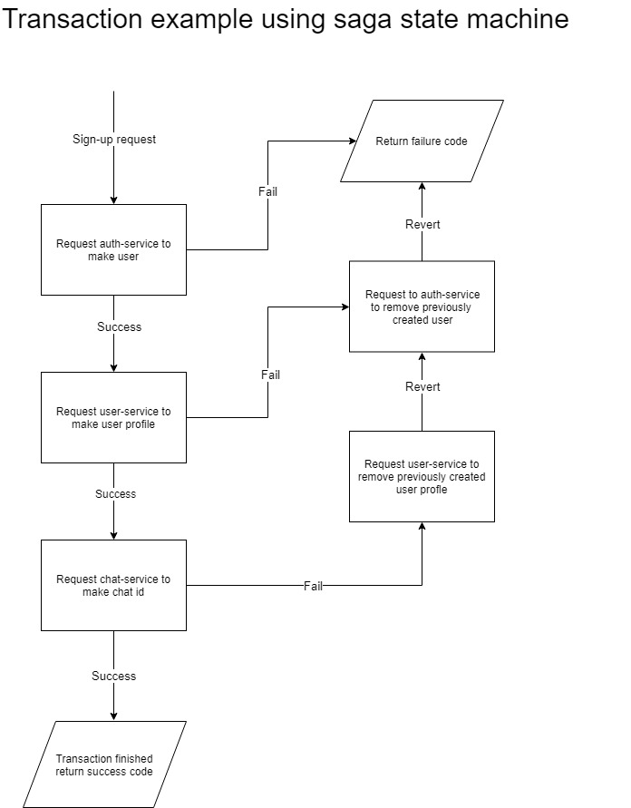

All app requests except instant messaging requests are made to the api-gateway. The api-gateway is responsible of routing requests to the appropriate microservices
Handles basic user authentication such as checking access tokens for tasks that require permission
Maintains data consistancy across services:
Some app requests incorporate many services and to achieve modulation services do not communicate with each other.
As a result, the api-gateway is in charge of scheduling requests to multiple services.
However, a request to a certain service may fail and to maintain
data consistancy previous requests must be reverted by the api-gateway.
For example, when a user requests for sign-up the api-gateway:
1.Request to auth-service to create user
2.Request to user-service to create user profile
3.Request to chat-service to generate xmpp account
However, if any of these steps fail, to achieve transaction atomicity, previous requests made must be reverted. The api-gateway uses a
“saga state machine” to achieve such task and maintain data consistency over distributed services.
For the example above if transaction #3 fails the saga state machine reverts transaction #2 and #1.

Auth-service
Stores usernames and hashed passwords using the node.js Bcrypt library
Verifies passwords and grants refresh and access tokens
User-service
Stores and handles requests for user data such as profile image uri, background image uri, shop ownership, name
The chat-service has access to the MySQL database connected to ejabberd-service(XMPP) which allows custom http requests that
the ejabberd framework does not support. For example, unread messages and dialogs lists cannot be synced among
multiple devices only using XMPP, however, adding the chat service makes such features possible. Also,
this service handles push notifications for messages when users are offline.
{kind=link}
{kind=link}
{kind=link}
{kind=link}
{kind=link}
{kind=link}
{kind=link}
{kind=link}